| 日付 | 2015年4月19日（日） |
|---|---|
| 山域 | 安蘇山塊 |
| メンバー | 家族（妻、長女・4歳、長男・1歳） |
| 山行形態 | 子連れ日帰り |
| アクセス | 車 |
| ルート (Map) | 阿夫利神社駐車場 (7:52) - (9:08) 妙義山 (9:16) - (9:28) 鷹巣山 - (9:42) 東屋 (10:19) - (10:53) 阿夫利神社駐車場 |
栃木県に大小山という変わった名前の山がある。
標高300m程度の小さな山なのだが、岩場があり面白そうな山だ。
コースタイムも手頃とあって、前々から目をつけていた。
春の暖かな一日に、出かけてみることにする。
広い駐車場に到着する。
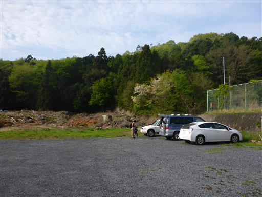
山の上部に「大小」の大きな字が見える。
これが大小山のシンボルになっている。
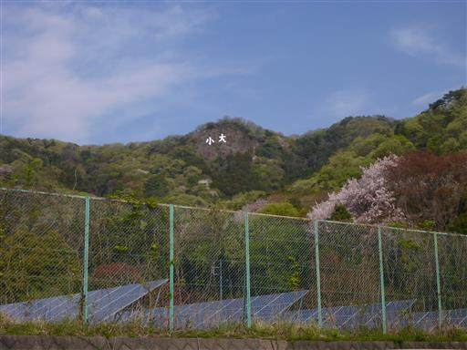
駐車場から5分程度歩くと、ここにも駐車場がある。
こちらに車を停めるべきだった。
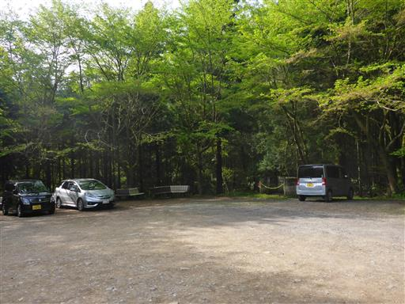
登山道は最初から急坂だ。
低い山だが、いきなりの急登は結構体がきつい。
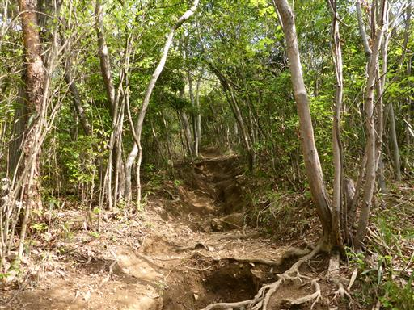
白い花があちらこちらに咲いている。
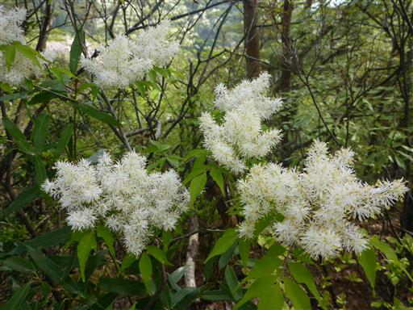
ツツジの花も咲いている。そろそろツツジの季節になってきた。
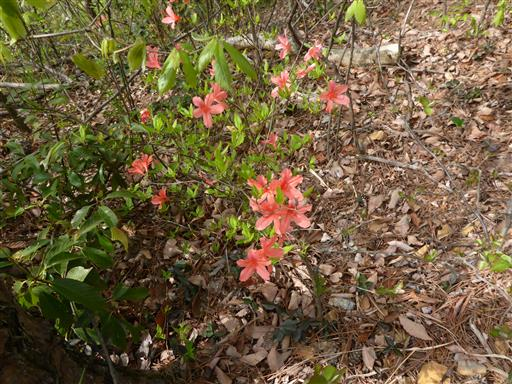
岩が一方向のみに割れている。この辺りはどのような地層なのだろう？
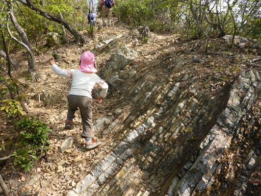
急な坂を登りきると、緩やかな尾根道になる。新緑がきれいだ。
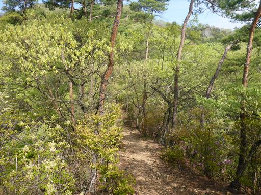
しばらく歩くと岩場が現れる。

岩場を登って行く。娘はこういった登山道の方が生き生きしている。
傾斜の緩い岩場で難易度は高くない。
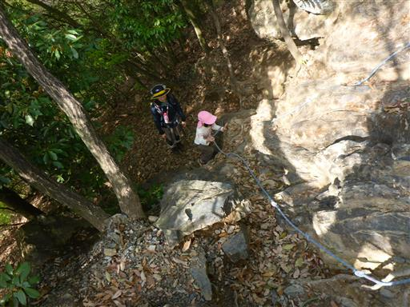
岩場を登りきると展望が広がる。
今日は景色が霞んでいて、あまり遠くまでは見渡せない。
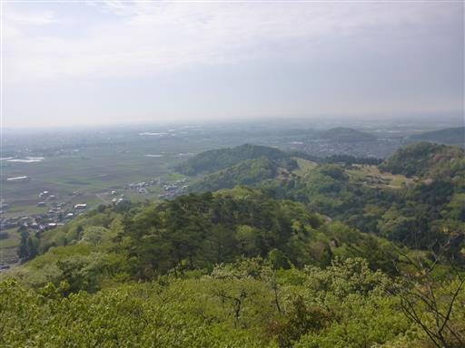
岩に大きな穴が開いている。人工の穴のようだ。
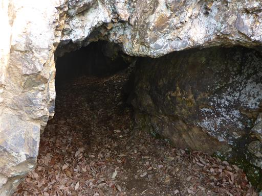
途中で息子が泣いて何かを訴えだす。ここ最近いつもこのパターンだ。
息子をキャリアから下ろすと、スタスタと歩き始める。ずっと山を歩きたかったようだ。
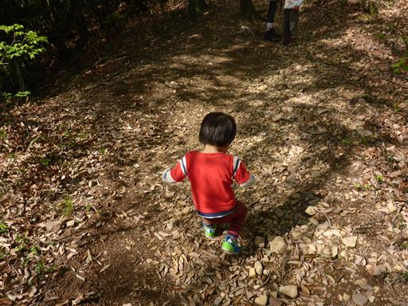
展望が広がり、大小の字が横から見える。
だいぶ高いところまで登ってきた。
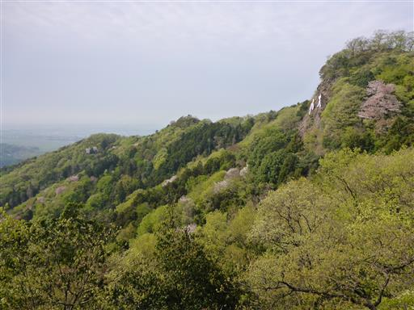
娘が側の石に登って遊んでいると、息子も真似して登り出す。
何でも姉の真似をするので、危なっかしい。
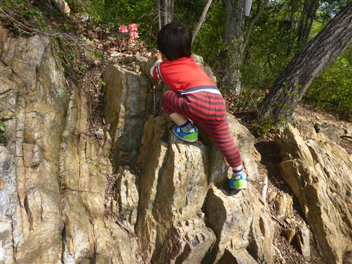
息子は歩くのが楽しいようで、キャリアに乗せようとすると怒る。
岩場は親の両手を掴んで登って行く。
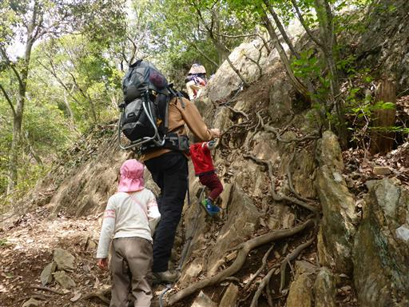
簡単な岩場のため、娘は補助なしに登れる。
こちらは息子に両手を捕まれているので、結構登りにくい。
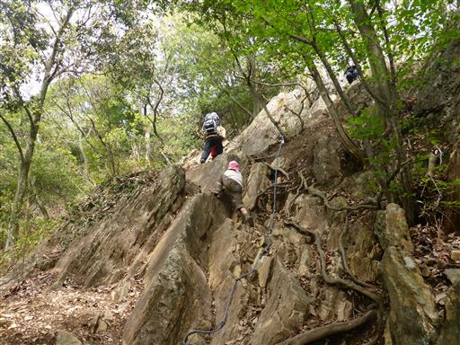
あっという間の登りで山頂が見えてきた。
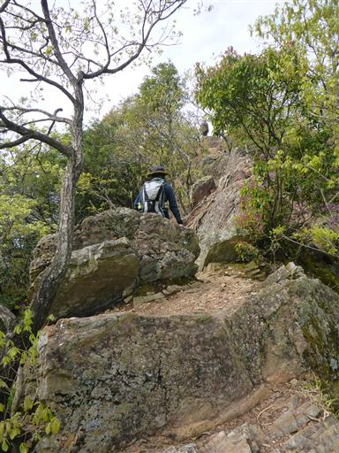
息子は岩にしがみついて頑張って登っている。
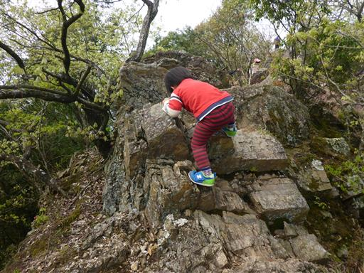
大小山山頂に到着する。標高314m。
ここのピークは妙義山という名がついていて、ここが大小山の最高峰だ。
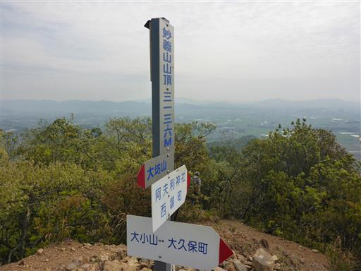
霞んではいるが360度の展望が広がる。
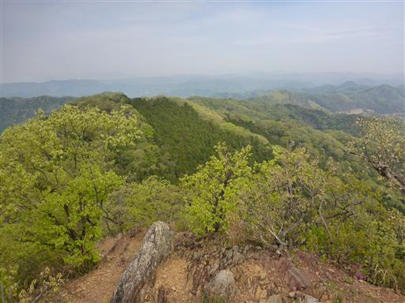
遠くに薄ら男体山が見えている。
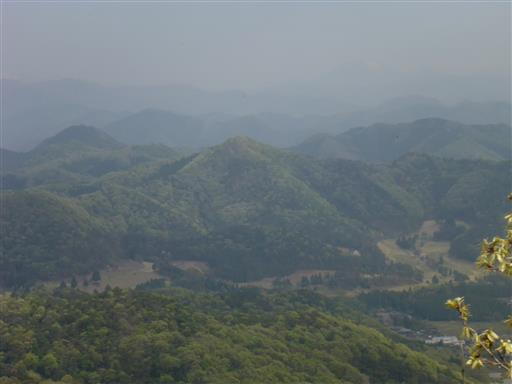
時刻は9時で昼食には早すぎるので、下山を開始することにする。
下りも急斜面だ。
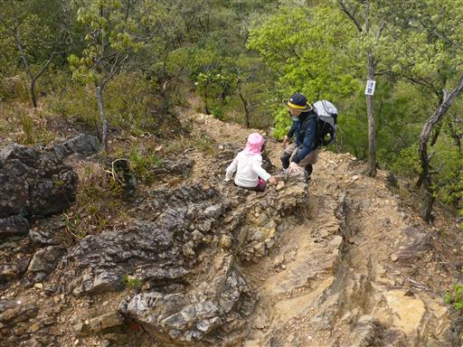
下りになっても息子はキャリアに乗ろうとしない。
しかし足はフラフラで、掴んだ手にぶら下がるようにして歩いている。
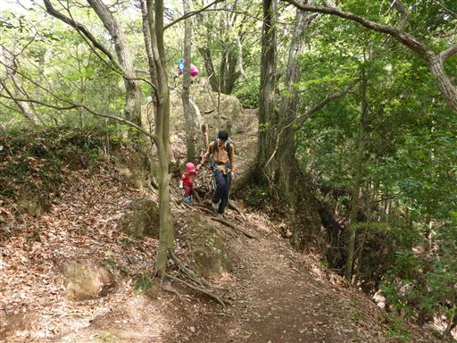
隣のピークである鷹巣山に到着。標識には大小山山頂と書かれている。
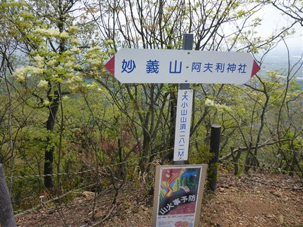
ここからは一箇所のみ展望が広がる。
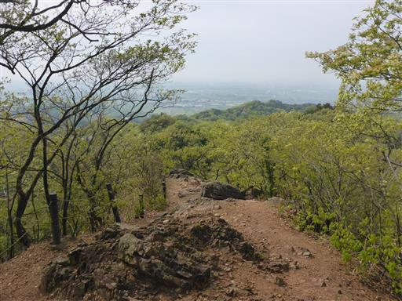
ここから先も岩がちな道が続く。
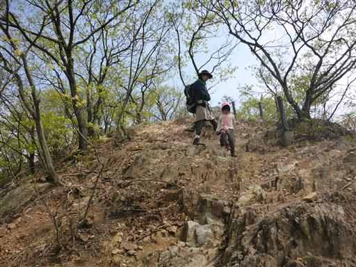
急な階段を下る。
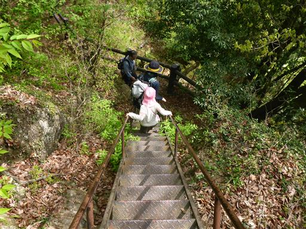
階段を下った先に東屋がある。たくさんの登山者が休憩していたが、
1グループのツアー登山だったようで、彼らが去った後は静かになる。
ここで昼食をとることにする。
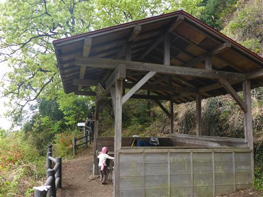
ここは大小の文字の真下。見上げると大小の文字が大きい。
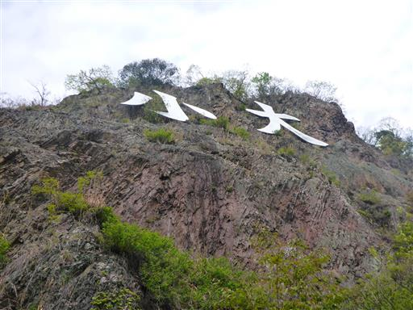
昼食をとったら、残りわずかの行程を歩く。
男坂と女坂の分岐点では男坂を選択。
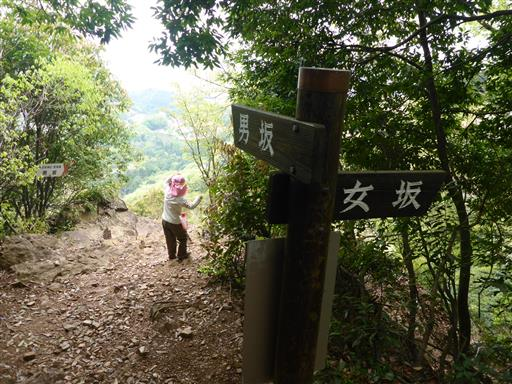
男坂は当然険しい道。娘は何度か転んで、その度に泣いている。
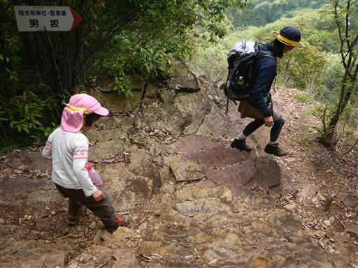
斜面の新緑と桜が美しい。
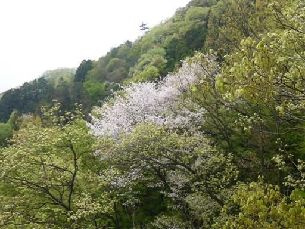
大小山仙間神社に到着。
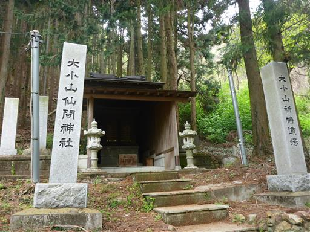
ここからは整備された道になる。
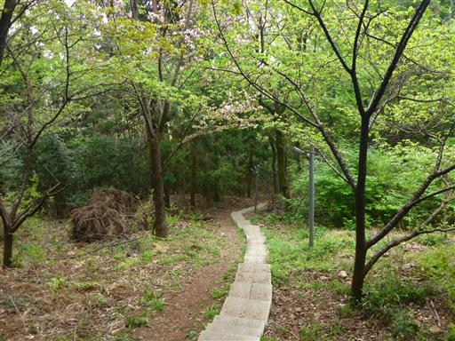
下山地点にある阿夫利神社。丹沢の大山にも同じ名前の神社がある。
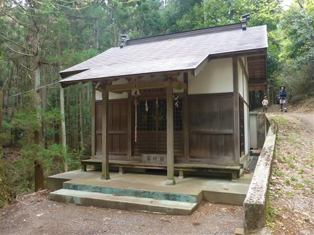
無事下山。駐車場は上の駐車場も下の駐車場も一杯になっていた。
小さな山頂にこれだけの人が集まると、山頂は大混雑になるだろう。
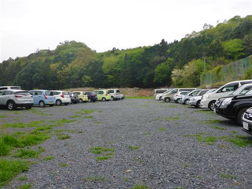
時刻は11時前、帰るには早すぎるため、近くにある「あしかがフラワーパーク」に立ち寄る。
フジの花で非常に有名な場所のようだ。
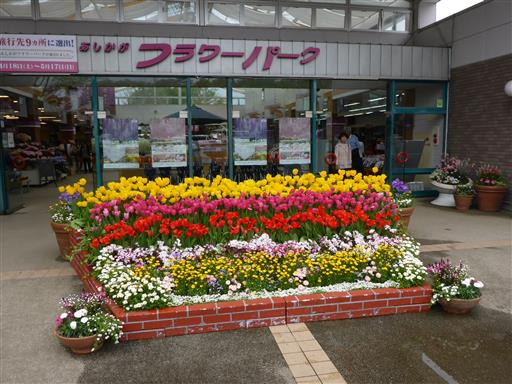
料金は大人900円、子供500円。暇つぶしのために立ち寄っただけで2300円は払えない。
フジの花が満開ならともかく、咲き始め程度とのことなので、入園をあきらめる。
もっとも、満開の時期は入園料が1700円/人になるのだが…。強気な値段だ。
大小山は思ったより小さく、難易度も低く、少々消化不良だったが、思わぬ息子の初山行となった。
今後も歩きたいと言い続けられると、ちょっと厄介ではある。
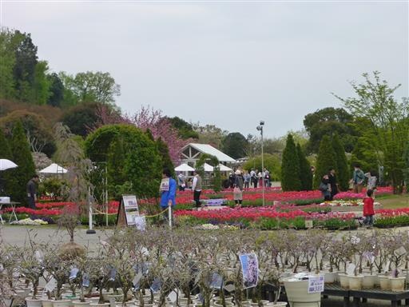